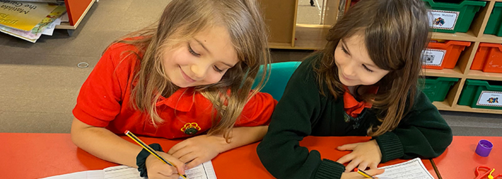

Rhagoriaeth
Safonau uchel, ymdrech, gwytnwch a'r awydd i wneud ein gorau glas.
Amdanom ni / About
Rydym yn ysgol gynradd annibynnol Gymraeg i blant 3 i 11 oed, wedi ein gwreiddio yn Hanwell ac yn estyn allan at Gymry Llundain.
Dechreuodd yr ysgol yn 1958 pan ddaeth rhieni at ei gilydd i greu lle i blant ddysgu a byw'r Gymraeg yn Llundain. Ar ôl cyfnodau yn Paddington, Camden Town, Willesden Green a Stonebridge Park, mae'r ysgol bellach yng Nghanolfan Gymunedol Hanwell.
Yn 2015 dathlwyd agoriad swyddogol y lleoliad presennol, ac ar ôl mwy na 60 mlynedd mae'r ysgol yn dal i edrych ymlaen at y degawd nesaf.
The school combines the intimacy of a small primary setting with the possibilities of a global city.
Safonau uchel, ymdrech, gwytnwch a'r awydd i wneud ein gorau glas.
Caredigrwydd, empathi, tegwch a chyfrifoldeb personol mewn cymuned fach.
Cerddoriaeth, celfyddydau, datrys problemau a dysgu o gamgymeriadau.

Tîm a llywodraethiant
Athrawes Arweiniol yr ysgol yw Miss Emilia Davies. Mae'r tîm hefyd yn cynnwys arbenigedd mewn cerddoriaeth, Ffrangeg, addysg grefyddol, y blynyddoedd cynnar, gweinyddiaeth a chymorth dysgu.
Mae'r corff llywodraethu yn cael ei gadeirio gan Mrs Glenys Roberts, gyda chyfrifoldebau ar draws cyllid, diogelu, cwricwlwm, GDPR a chynrychiolaeth rhieni.
Mae'r ysgol yn rhan o The Welsh Schools Trust Limited, rhif elusen 1167479.